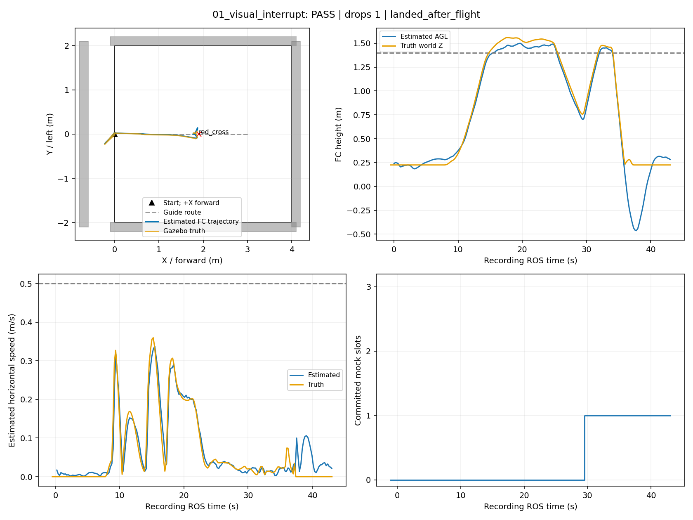
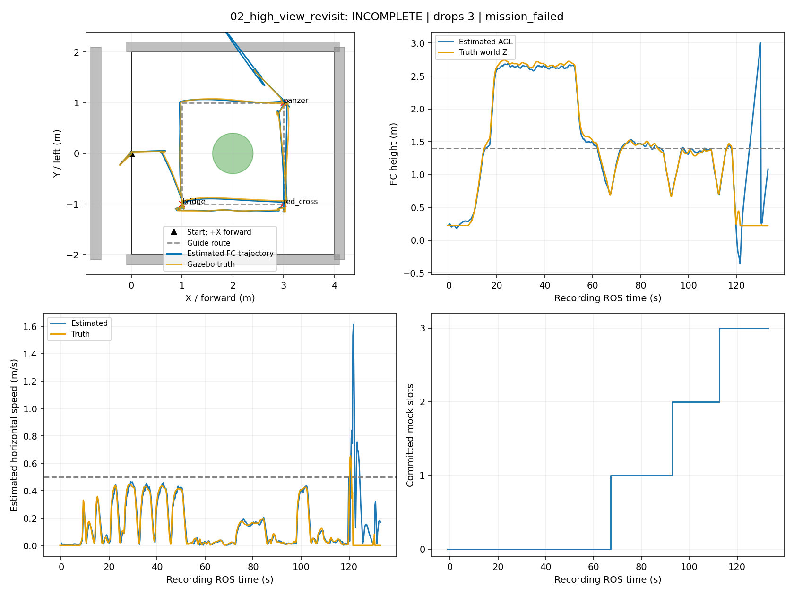
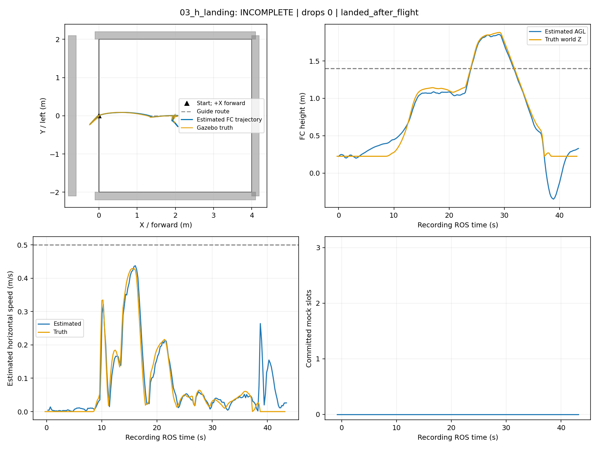
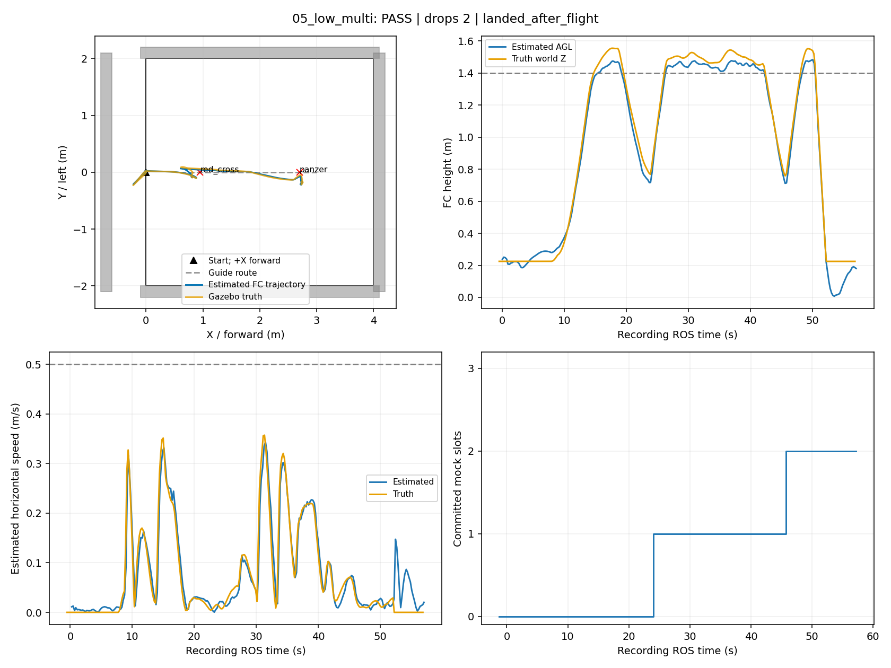
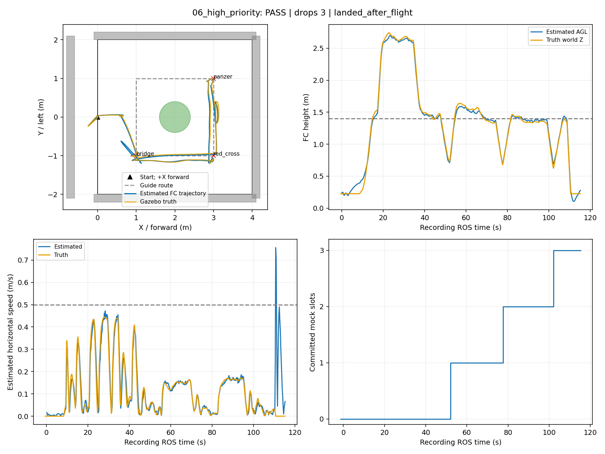
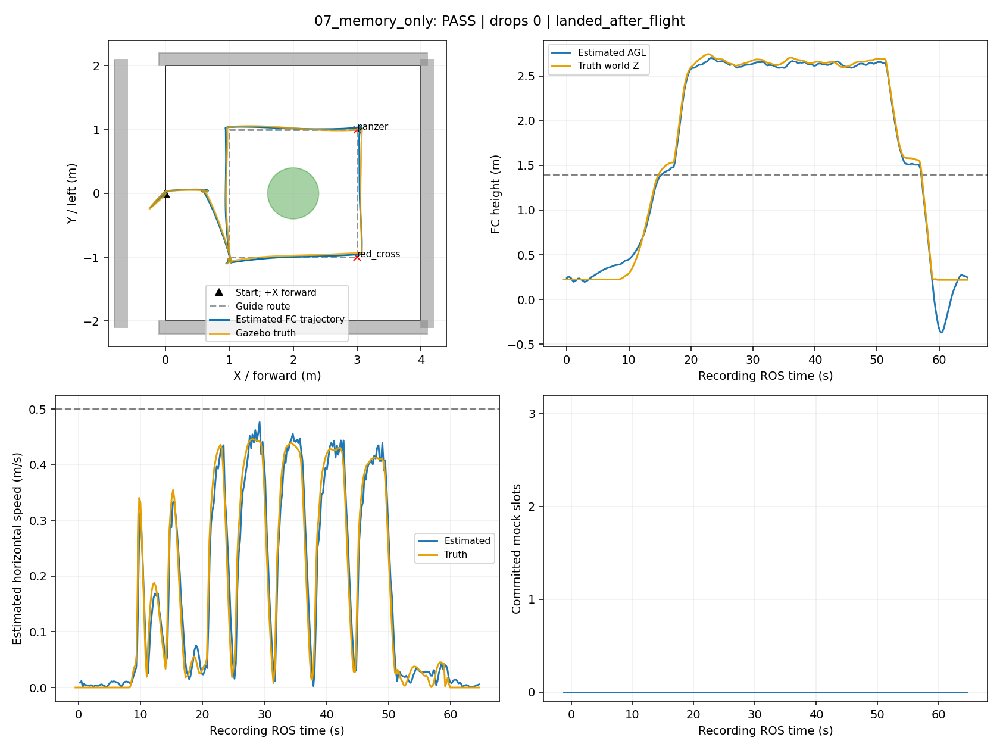

板端专项：同链仿真与录像
真实 Gazebo/PX4/定位/规划/视觉链；模拟执行器。三路录像分别播放；固定5fps编码，消息丢帧会缩短视频时长，准确时序以帧时间CSV与ROS计时为准。任务计时不包含前置起飞。图中蓝线为飞控估计；有独立真值记录的轮次另画橙线（高度为Gazebo世界Z），目标与障碍轮廓仅用于事后分析。
01_visual_interrupt — PASS
任务启动至结束 29.479999999999997 ROS秒；模拟投递 1/1；结束原因 landed_after_flight。验收详情

report_replay (43.400000s)
overview (31.200000s)
camera_raw (43.400000s)
camera_annotated (43.400000s)
02_high_view_revisit — INCOMPLETE
任务启动至结束 119.389 ROS秒；模拟投递 3/3；结束原因 mission_failed。验收详情

report_replay (132.400000s)
overview (103.000000s)
camera_raw (132.400000s)
camera_annotated (132.400000s)
03_h_landing — INCOMPLETE
任务启动至结束 30.237000000000002 ROS秒；模拟投递 0/0；结束原因 landed_after_flight。验收详情

report_replay (42.600000s)
overview (33.600000s)
camera_raw (42.600000s)
camera_annotated (42.600000s)
05_low_multi — PASS
任务启动至结束 43.482 ROS秒；模拟投递 2/2；结束原因 landed_after_flight。验收详情

report_replay (56.600000s)
overview (43.600000s)
camera_raw (56.600000s)
camera_annotated (56.600000s)
06_high_priority — PASS
任务启动至结束 101.3 ROS秒；模拟投递 3/3；结束原因 landed_after_flight。验收详情

report_replay (114.600000s)
overview (85.400000s)
camera_raw (114.600000s)
camera_annotated (114.600000s)
07_memory_only — PASS
任务启动至结束 50.81100000000001 ROS秒；模拟投递 0/0；结束原因 landed_after_flight。验收详情

report_replay (64.000000s)
overview (48.000000s)
camera_raw (64.000000s)
camera_annotated (64.000000s)